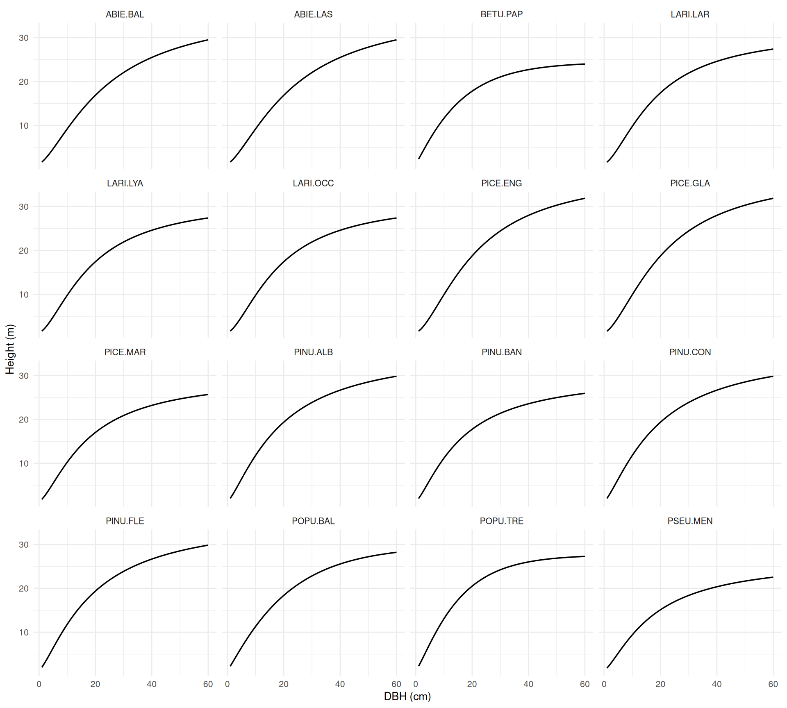
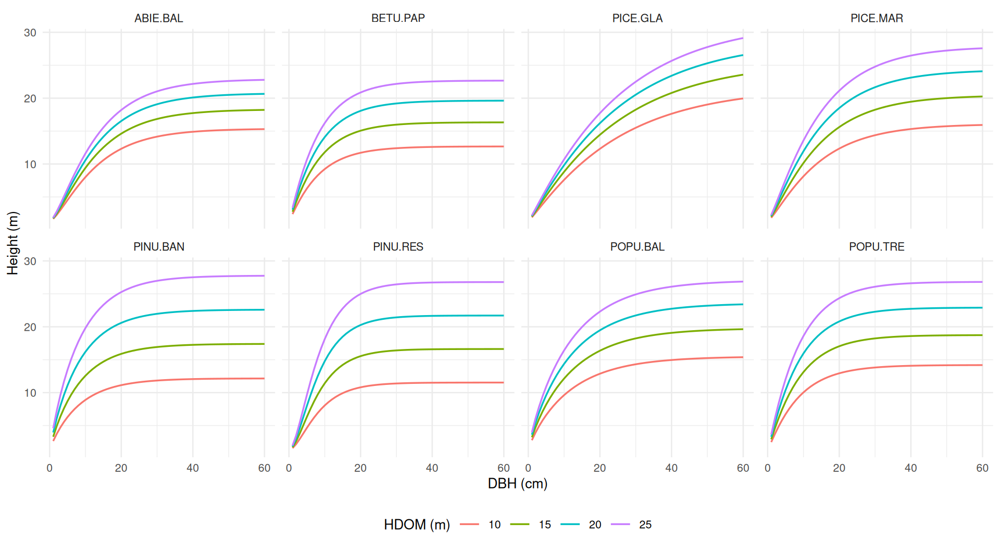
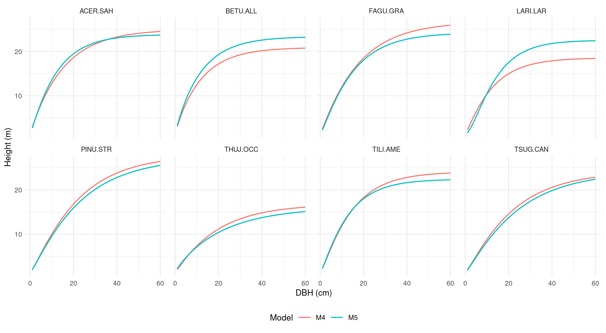
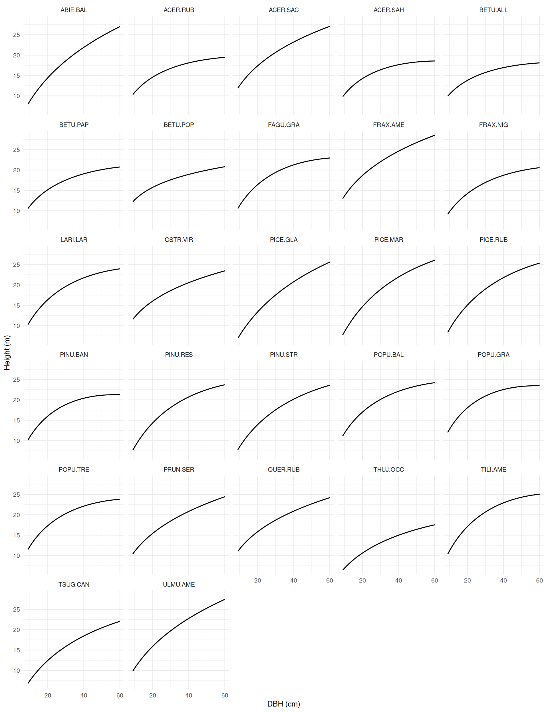
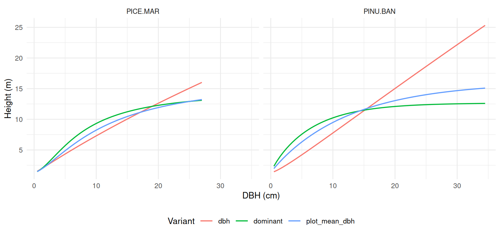

| Model ID | Function | Jurisdiction | Origin | Required predictors | Optional predictors | Species |
|---|---|---|---|---|---|---|
huang2016 |
hd_huang2016() |
AB | natural | DBH |
natural_subregion |
16 |
sharmaparton2007 |
hd_sharmaparton2007() |
ON | both |
DBH, HDOM, BA, TPH
|
— | 8 |
eslamdoust2026_m4 |
hd_eslamdoust2026() |
ON | natural | DBH |
— | 8 |
eslamdoust2026_m5 |
hd_eslamdoust2026() |
ON | natural |
DBH, HDOM, BA, TPH
|
— | 8 |
auger2016 |
hd_auger2016() |
QC | natural |
DBH, BA
|
QMD, SDOM, MP, VP, TMOY, PTOT, altitude, disturbance
|
27 |
auger2025_dbh |
hd_auger2025() |
QC | plantation | DBH |
— | 2 |
auger2025_plot_mean_dbh |
hd_auger2025() |
QC | plantation |
DBH, mean_DBH
|
— | 2 |
auger2025_dominant |
hd_auger2025() |
QC | plantation |
DBH, HDOM, dominant_DBH
|
— | 2 |
DBH–height (hd_*()) models predict total tree height (m) from diameter at breast height (DBH, cm, measured at 1.3 m). They are typically used to fill in heights of trees that were not measured, before applying a volume or biomass model that requires height.
Many published DBH–height models need more than DBH: stand-level predictors such as basal area, stems per hectare or dominant height, climate normals, or ecological classification codes. Each source also defines these predictors differently (size thresholds, all-species vs species-specific totals, dominant-height definitions). For this reason:
- each model is a separate function whose arguments are exactly the predictors that model uses;
- there is no automatic model selection (unlike
vol()): you choose the model, and a missing required predictor is an error, never replaced by a proxy; - a registry and two helper functions let you find which models suit your data, and what each predictor means in the source publication.
DBH–height models included in the package
-
hd_auger2016()(Auger, 2016). Coverage: QC, natural stands. 27 species. Model ID(s):auger2016. -
hd_auger2025()(Auger et al., 2025). Coverage: QC, plantations. 2 species. Model ID(s):auger2025_dbh,auger2025_plot_mean_dbh,auger2025_dominant. -
hd_eslamdoust2026()(Eslamdoust et al., 2026). Coverage: ON, natural stands. 8 species. Model ID(s):eslamdoust2026_m4,eslamdoust2026_m5. -
hd_huang2016()(Huang et al., 2016). Coverage: AB, natural stands. 16 species. Model ID(s):huang2016. -
hd_sharmaparton2007()(Sharma and Parton, 2007). Coverage: ON, natural stands and plantations. 8 species. Model ID(s):sharmaparton2007.
The registry has one row per model variant. Some functions implement several variants: hd_eslamdoust2026() chooses M4 (DBH only) or M5 (with stand variables) from the predictors you supply, and hd_auger2025() uses an explicit variant argument because its variants need different inputs.
Finding a model for your data
hd_model_registry() returns the full metadata table (model form, region argument, whether calibration information is published, etc.):
hd_model_registry() |>
dplyr::select(model_id, engine, province_scope, equation_family, required_predictors)
#> # A tibble: 8 × 5
#> model_id engine province_scope equation_family required_predictors
#> <chr> <chr> <list> <chr> <list>
#> 1 huang2016 hd_hu… <chr [1]> chapman_richar… <chr [1]>
#> 2 sharmaparton2007 hd_sh… <chr [1]> chapman_richar… <chr [4]>
#> 3 eslamdoust2026_m4 hd_es… <chr [1]> chapman_richar… <chr [1]>
#> 4 eslamdoust2026_m5 hd_es… <chr [1]> chapman_richar… <chr [4]>
#> 5 auger2016 hd_au… <chr [1]> log_quadratic <chr [2]>
#> 6 auger2025_dbh hd_au… <chr [1]> korf <chr [1]>
#> 7 auger2025_plot_mean… hd_au… <chr [1]> chapman_richar… <chr [2]>
#> 8 auger2025_dominant hd_au… <chr [1]> chapman_richar… <chr [3]>find_hd_models() filters the registry by jurisdiction and species, and reports which required predictors each candidate needs that you do not have. Models with missing predictors are kept as “near misses”, so you can see what extra data would make them usable:
find_hd_models(
jurisdiction = "ON",
species = "PICE.MAR",
available = c("DBH", "BA", "TPH")
) |>
dplyr::select(model_id, usable, missing_predictors)
#> # A tibble: 1 × 3
#> model_id usable missing_predictors
#> <chr> <lgl> <list>
#> 1 sharmaparton2007 FALSE <chr [1]>Here hd_sharmaparton2007() covers black spruce in Ontario but also needs dominant height (HDOM). Names in available are the hd_*() argument names and are case-sensitive.
get_hd_model_info() returns the registry entry of one model, its species coverage, and its predictor table:
info <- get_hd_model_info("sharmaparton2007")
info$species
#> [1] "ABIE.BAL" "BETU.PAP" "PICE.GLA" "PICE.MAR" "PINU.BAN" "PINU.RES" "POPU.BAL"
#> [8] "POPU.TRE"
info$predictors
#> # A tibble: 4 × 6
#> arg level units required definition source_locator
#> <chr> <chr> <chr> <lgl> <chr> <chr>
#> 1 DBH tree cm TRUE D = diameter at breast height (D… FEM 249:187-1…
#> 2 HDOM plot m TRUE Dominant stand height (SHT): mea… FEM 249:187-1…
#> 3 BA plot m2/ha TRUE Total tree basal area (BA/ha); m… FEM 249:187-1…
#> 4 TPH plot stems/ha TRUE Number of stems (N/ha), calculat… FEM 249:187-1…Predictors
Predictor arguments follow a shared vocabulary, with upper-case acronyms and lower-case words. A shared name is used only when the source’s quantity fits it; the exact definition (size threshold, species basis, dominant-height definition) is model-specific and is given in each function’s help page and in the table below.
| Argument | Level | Units | Meaning |
|---|---|---|---|
DBH |
tree | cm | Diameter at breast height (1.3 m) |
species |
tree | NFI code | Species code, e.g. PICE.MAR
|
BA |
plot | m²/ha | Stand basal area |
TPH |
plot | stems/ha | Stand density |
HDOM |
plot | m | Dominant (or dominant and codominant) height |
QMD |
plot | cm | Quadratic mean DBH |
| region / classification | plot | code | Model-specific names, e.g. natural_subregion (AB), SDOM, MP, VP (QC) |
Plot-level predictors can be given as a single value (recycled to all trees) or as one value per tree. The package does not compute stand variables from tree lists, because each source defines them differently: compute BA, TPH, HDOM, etc. following the definition of the model you use.
Predictor definitions for every implemented model, as given in the source publication (with page or table):
| Model ID | Argument | Level | Units | Required | Definition | Source |
|---|---|---|---|---|---|---|
huang2016 |
DBH |
tree | cm | yes | Tree diameter (cm) measured at a breast height of 1.3 m above the ground. | T/609 p. 6 (eqs. [1]-[2]) |
huang2016 |
natural_subregion |
plot | code (1-21 or e.g. ‘CM’) | no | Alberta 2006 natural subregion (Natural Regions Committee 2006); selects the natural-subregion-group model. NULL = provincial model. | T/609 Table 2 (p. 2); Table 4 (p. 7) |
sharmaparton2007 |
DBH |
tree | cm | yes | D = diameter at breast height (DBH) (cm). | FEM 249:187-198, p. 190 (eq. 6) |
sharmaparton2007 |
HDOM |
plot | m | yes | Dominant stand height (SHT): mean height of sampled dominant and codominant trees in a plot, irrespective of species. | FEM 249:187-198, p. 188; p. 190 |
sharmaparton2007 |
BA |
plot | m2/ha | yes | Total tree basal area (BA/ha); minimum DBH for the total not stated. | FEM 249:187-198, p. 188; p. 190 |
sharmaparton2007 |
TPH |
plot | stems/ha | yes | Number of stems (N/ha), calculated from the trees with DBH greater than or equal to 2.5 cm. | FEM 249:187-198, p. 188 |
eslamdoust2026_m4 |
DBH |
tree | cm | yes | DBH_ij is diameter at breast height (cm) of jth tree in ith plot. | FST 22:217-230, p. 220 (eq. 4) |
eslamdoust2026_m5 |
DBH |
tree | cm | yes | DBH_ij is diameter at breast height (cm) of jth tree in ith plot. | FST 22:217-230, p. 220 (eq. 5) |
eslamdoust2026_m5 |
HDOM |
plot | m | yes | Stand height (SHT): mean height of dominant and co-dominant trees; species basis not stated. | FST 22:217-230, p. 219; Table 5 (p. 225) |
eslamdoust2026_m5 |
BA |
plot | m2/ha | yes | Stand basal area (BAH, m2/ha) of the plot; minimum DBH and species basis not stated. | FST 22:217-230, p. 219; p. 220 |
eslamdoust2026_m5 |
TPH |
plot | stems/ha | yes | Number of trees per hectare (n/ha) with DBH >= 2.5 cm of the plot. | FST 22:217-230, p. 220 (eq. 5) |
auger2016 |
DBH |
tree | cm | yes | DHP (diamètre à hauteur de poitrine, 1.3 m) de l’arbre (cm). | NRF 146, p. 4 (eq. [1]) |
auger2016 |
BA |
plot | m2/ha | yes | ST: surface terrière marchande dans la placette (m2/ha; trees with DBH > 9 cm, all species). | NRF 146, p. 4; Tableau 3 (p. 6) |
auger2016 |
QMD |
plot | cm | no | DHP moyen quadratique des arbres de la placette (cm); used as RDHP = DBH / QMD. Required for 21 species. | NRF 146, Tableau 3 (p. 6); Tableau 5 (pp. 10-11) |
auger2016 |
SDOM |
plot | code (‘1’, ‘2est’ … ‘6ouest’) | no | Sous-domaine bioclimatique (11 classes). Required for 11 species. | NRF 146, Tableau 3 (p. 6); Annexe 3 |
auger2016 |
MP |
plot | code (0-9) | no | Milieu physique (10 classes; MRN 2013). Required for 10 species. | NRF 146, Tableau 3 (p. 6); Annexe 2 |
auger2016 |
VP |
plot | code (e.g. ‘RS2’) | no | Végétation potentielle (three-character code). Required for 15 species. | NRF 146, Tableau 3 (p. 6); Annexe 4 |
auger2016 |
TMOY |
plot | degC | no | Température annuelle moyenne sur la période 1981-2010 (°C). Required for 7 species. | NRF 146, Tableau 3 (p. 6) |
auger2016 |
PTOT |
plot | mm | no | Précipitations totales annuelles sur la période 1981-2010 (mm). Required for 10 species. | NRF 146, Tableau 3 (p. 6) |
auger2016 |
altitude |
plot | m | no | Altitude (m). Required for 4 species. | NRF 146, Tableau 3 (p. 6) |
auger2016 |
disturbance |
plot | code (anthropique/naturelle/aucune) | no | Occurrence d’une perturbation légère (3 classes): anthropique, naturelle, aucune; English ‘anthropogenic’, ‘natural’, ‘none’ accepted. Required for 5 species. | NRF 146, Tableau 3 (p. 6); Annexe 2 |
auger2025_dbh |
DBH |
tree | cm | yes | Diamètre à hauteur de poitrine (mesuré à 1,3 m, DHP), cm. | SSS-10 p. 2; eq. 10 (p. 11) |
auger2025_plot_mean_dbh |
DBH |
tree | cm | yes | Diamètre à hauteur de poitrine (mesuré à 1,3 m, DHP), cm. | SSS-10 p. 2; eqs. 11-12 (p. 14) |
auger2025_plot_mean_dbh |
mean_DBH |
plot | cm | yes | DMOY: ‘le DHP moyen de tous les arbres de la placette’ (arithmetic mean DBH of all trees in the plot). | SSS-10 eq. 2 (p. 6) |
auger2025_dominant |
DBH |
tree | cm | yes | Diamètre à hauteur de poitrine (mesuré à 1,3 m, DHP), cm. | SSS-10 p. 2; eqs. 13-14 (p. 16) |
auger2025_dominant |
HDOM |
plot | m | yes | HDOM: mean height of the dominant trees of the plot, i.e. ‘les 8 plus hauts arbres plantés faisant partie de l’étage des arbres dominants et bien répartis dans la placette (200 arbres/ha)’ (400 m2 plots). | SSS-10 eq. 3 (p. 7); p. 2 |
auger2025_dominant |
dominant_DBH |
plot | cm | yes | DDOM: mean DBH of the same dominant trees of the plot. | SSS-10 eq. 3 (p. 7); p. 2 |
For hd_auger2016(), the optional predictors are required only for the species whose model uses them; see ?hd_auger2016 and the source for the per-species predictor sets.
Using the models
All hd_*() functions are vectorized, return a tibble with a height column (m), and can be used directly inside dplyr::mutate():
trees <- tibble::tibble(
plot = c(1, 1, 1, 2, 2),
DBH = c(12, 25, 18, 30, 9),
species = c("PICE.MAR", "PINU.BAN", "POPU.TRE", "PICE.GLA", "ABIE.BAL"),
HDOM = c(16, 16, 16, 22, 22),
BA = c(30, 30, 30, 18, 18),
TPH = c(3000, 3000, 3000, 1200, 1200)
)
trees |>
dplyr::mutate(hd_sharmaparton2007(DBH, species, HDOM = HDOM, BA = BA, TPH = TPH))
#> # A tibble: 5 × 7
#> plot DBH species HDOM BA TPH height
#> <dbl> <dbl> <chr> <dbl> <dbl> <dbl> <dbl>
#> 1 1 12 PICE.MAR 16 30 3000 12.0
#> 2 1 25 PINU.BAN 16 30 3000 17.5
#> 3 1 18 POPU.TRE 16 30 3000 17.3
#> 4 2 30 PICE.GLA 22 18 1200 21.0
#> 5 2 9 ABIE.BAL 22 18 1200 9.77A model using DBH only:
trees |>
dplyr::mutate(hd_huang2016(DBH, species))
#> # A tibble: 5 × 7
#> plot DBH species HDOM BA TPH height
#> <dbl> <dbl> <chr> <dbl> <dbl> <dbl> <dbl>
#> 1 1 12 PICE.MAR 16 30 3000 11.9
#> 2 1 25 PINU.BAN 16 30 3000 19.8
#> 3 1 18 POPU.TRE 16 30 3000 19.4
#> 4 2 30 PICE.GLA 22 18 1200 24.4
#> 5 2 9 ABIE.BAL 22 18 1200 8.33Variants
When a source defines a hierarchy of models, the variant is chosen from the inputs you supply and reported once per session with a message. For example, hd_huang2016() uses the provincial models unless natural_subregion is given, and hd_eslamdoust2026() uses M5 only when HDOM, BA and TPH are all supplied (supplying only some of them is an error). Set keep_model_id = TRUE to return the variant used for each tree:
hd_eslamdoust2026(
DBH = c(15, 30),
species = c("ACER.SAH", "PINU.STR"),
HDOM = 22, BA = 30, TPH = 1200,
keep_model_id = TRUE
)
#> hd_eslamdoust2026(): `HDOM`, `BA` and `TPH` supplied; using model M5 (DBH and
#> stand variables).
#> This message is displayed once per session.
#> # A tibble: 2 × 2
#> height model_id
#> <dbl> <chr>
#> 1 17.5 eslamdoust2026_m5
#> 2 21.5 eslamdoust2026_m5When variants need different inputs, the variant is chosen explicitly:
hd_auger2025(
DBH = c(6, 9, 12),
species = "PICE.MAR",
variant = "dominant",
HDOM = 9, dominant_DBH = 11
)
#> # A tibble: 3 × 1
#> height
#> <dbl>
#> 1 6.15
#> 2 7.73
#> 3 8.70Missing values and applicability limits
Rows with NA in a required input return NA height (no error), so the functions can be applied to tree lists with incomplete data. Inputs outside the range of the source’s fitting data are still computed, and a single warning lists the affected rows:
hd_sharmaparton2007(
DBH = c(20, NA, 80),
species = "PICE.MAR",
HDOM = 20, BA = 25, TPH = 2500
)
#> Warning: `hd_sharmaparton2007()`: 1 row outside the source's published applicability
#> range; predictions are extrapolated.
#> • `DBH`: 1 row (3)
#> # A tibble: 3 × 1
#> height
#> <dbl>
#> 1 18.5
#> 2 NA
#> 3 24.3Population-level vs calibrated prediction
Most DBH–height models are fitted as mixed-effects models with plot-level random effects. The hd_*() functions return population-level predictions: the fixed effects recommended by the source for trees in plots without height measurements, with random effects set to zero. For nonlinear mixed models this is the curve of a “typical” plot with the supplied predictors, not the mean over plots.
If some trees in a plot have measured heights, a model can be calibrated to that plot by predicting its random effects from the measured heights. This usually improves predictions considerably, but it is not implemented yet. The calibration_published column of hd_model_registry() indicates whether the source publishes the variance components needed for it:
hd_model_registry() |>
dplyr::select(model_id, prediction_types, calibration_published)
#> # A tibble: 8 × 3
#> model_id prediction_types calibration_published
#> <chr> <list> <lgl>
#> 1 huang2016 <chr [1]> TRUE
#> 2 sharmaparton2007 <chr [1]> TRUE
#> 3 eslamdoust2026_m4 <chr [1]> TRUE
#> 4 eslamdoust2026_m5 <chr [1]> TRUE
#> 5 auger2016 <chr [1]> TRUE
#> 6 auger2025_dbh <chr [1]> FALSE
#> 7 auger2025_plot_mean_dbh <chr [1]> FALSE
#> 8 auger2025_dominant <chr [1]> FALSEModel curves
The figures below show population-level DBH–height curves for each model and species. For models with stand-level predictors, curves are shown for the reference plot values stated with each figure; heights for other plots can differ substantially. Curves are drawn over a common DBH range and may extend beyond the fitting data of a species.
hd_huang2016()
Alberta (Huang et al., 2016). Provincial models (no natural_subregion).

hd_sharmaparton2007()
Northern Ontario boreal (Sharma and Parton, 2007). BA = 25 m²/ha and TPH = 2,500 stems/ha, for several dominant heights (HDOM), as in Fig. 2 of the source.

hd_eslamdoust2026()
Ontario boreal and Great Lakes–St. Lawrence forests (Eslamdoust et al., 2026). M4 (DBH only) and M5 with HDOM = 20 m, BA = 25 m²/ha and TPH = 1,500 stems/ha.

hd_auger2016()
Québec, 27 species (Auger, 2016). Reference plot: BA = 20 m²/ha, QMD = 20 cm, SDOM = "4est", MP = "2", VP = "MS2", TMOY = 2 °C, PTOT = 1,000 mm, altitude = 300 m, disturbance = "none" (each species uses only the predictors in its model). The source advises against use for trees with DBH < 9 cm, so curves start at 9 cm.

hd_auger2025()
Québec black spruce and jack pine plantations (Auger et al., 2025). The three variants: DBH only, plot mean DBH (mean_DBH = 12 cm), and dominant height and DBH (HDOM = 12 m, dominant_DBH = 16 cm). Curves are limited to the calibration DBH range of each species.

References
Auger, I., 2016. Une nouvelle relation hauteur-diametre tenant compte de l’influence de la station et du climat pour 27 essences commerciales du quebec (Note de recherche forestiere No. 146). Gouvernement du Quebec, ministere des Forets, de la Faune et des Parcs, Direction de la recherche forestiere, Quebec.
Auger, I., DeBlois, J., Lambert, M.-C., 2025. Relations hauteur-diametre, tarifs de cubage et equations de defilement pour l’epinette noire et le pin gris en plantation au quebec (Avis technique No. SSS-10). Gouvernement du Quebec, ministere des Ressources naturelles et des Forets, Direction de la recherche forestiere, Quebec. https://doi.org/10.82204/dcwg-5v65
Eslamdoust, J., Vasiliauskas, S., Little, T., Ashiq, M.W., 2026. Height–diameter modeling of tree species in boreal and mixed forests using a mixed-effects approach and stand-level variables. Forest Science and Technology 22, 217–230. https://doi.org/10.1080/21580103.2025.2571222
Huang, S., Yang, Y., Aitkin, D., 2016. Updated population and plot-specific individual tree height-diameter models for major Alberta tree species (No. Report #4, Tech. Rep. Pub. No. T/609). Forestry Division, Alberta Agriculture; Forestry, Edmonton, Alberta.
Sharma, M., Parton, J., 2007. Height–diameter equations for boreal tree species in Ontario using a mixed-effects modeling approach. Forest Ecology and Management 249, 187–198. https://doi.org/10.1016/j.foreco.2007.05.006